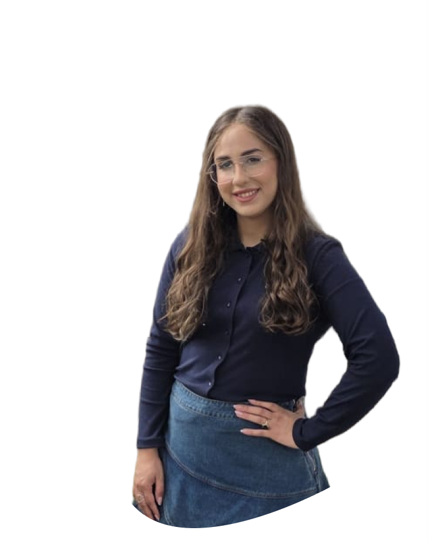
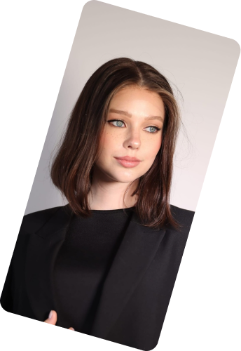
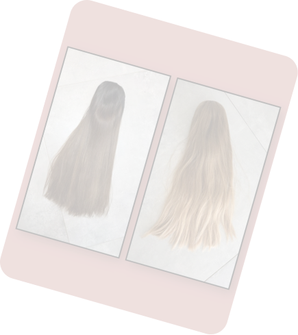
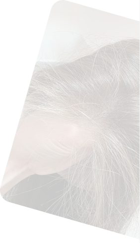
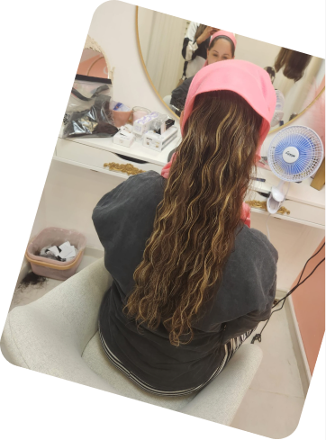

אודות רחלי
יצרנית פאות
פאה טובה מתחילה הרבה לפני
שרואים את התוצאה.
יש את השיער שממנו מתחילים, את הידע שנדרש כדי לבנות ממנו פאה, ואת העין המקצועית שיודעת לחבר בין כל הפרטים לבין האישה שעומדת מולי. נעים להכיר, רחלי כהן, יצרנית פאות. מעל 14 שנים שעולם השיער, האסתטיקה והיופי הוא חלק מהדרך המקצועית שלי, ובשנים האחרונות אני מתמקדת בבנייה וייצור פאות מאפס. מבחינתי, לייצר פאה זה הרבה מעבר לעבודה עם שיער. זו היכולת לראות את התוצאה עוד לפני שהיא קיימת.



אני לא מתחילה רק ממה שביקשת.
אני מנסה להבין מה את מחפשת.
לפעמים את מגיעה עם תמונה ברורה של הפאה שאת רוצה. לפעמים את יודעת מה אהבת בפאה הקודמת, אבל לא מצליחה להסביר מה חסר לך. ולפעמים את פשוט מרגישה שמשהו עדיין לא יושב כמו שדמיינת. את לא צריכה להסביר לי הכול במונחים מקצועיים. אני כאן כדי להקשיב, לזהות מה חשוב לך ולהבין אילו פרטים יכולים לעשות את ההבדל. הניסיון והעין המקצועית שפיתחתי לאורך השנים עוזרים לי לבחון לא רק את מה שביקשת, אלא גם את הדרך הנכונה להגיע לתוצאה שאת מחפשת.

שיער איכותי. ידע בייצור.
עין שרואה את החיבור.
בחירת השיער — הפאה מתחילה בחומר הגלם שלה. לבחירת השיער יש משמעות, ולכן אני מקדישה לה תשומת לב ומקפידה על איכות השיער שממנו מתחילים את העבודה. הידע שמאחורי הפאה — בנייה, דילול, צבע, נפח, תנועה ומבנה — כל אחד מהמרכיבים האלה משפיע על המראה הסופי. ייצור פאה דורש הבנה של האופן שבו הם עובדים יחד, ולא רק ידיים שיודעות לבצע.